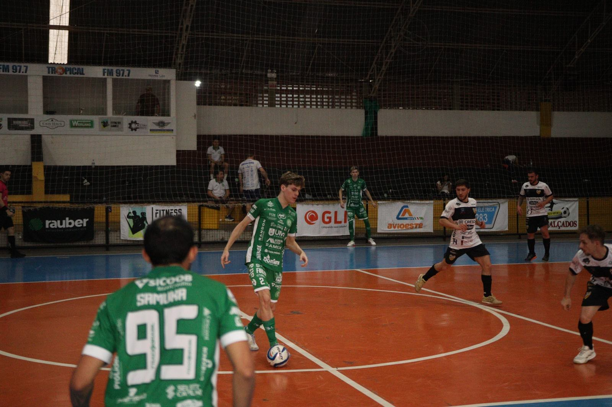
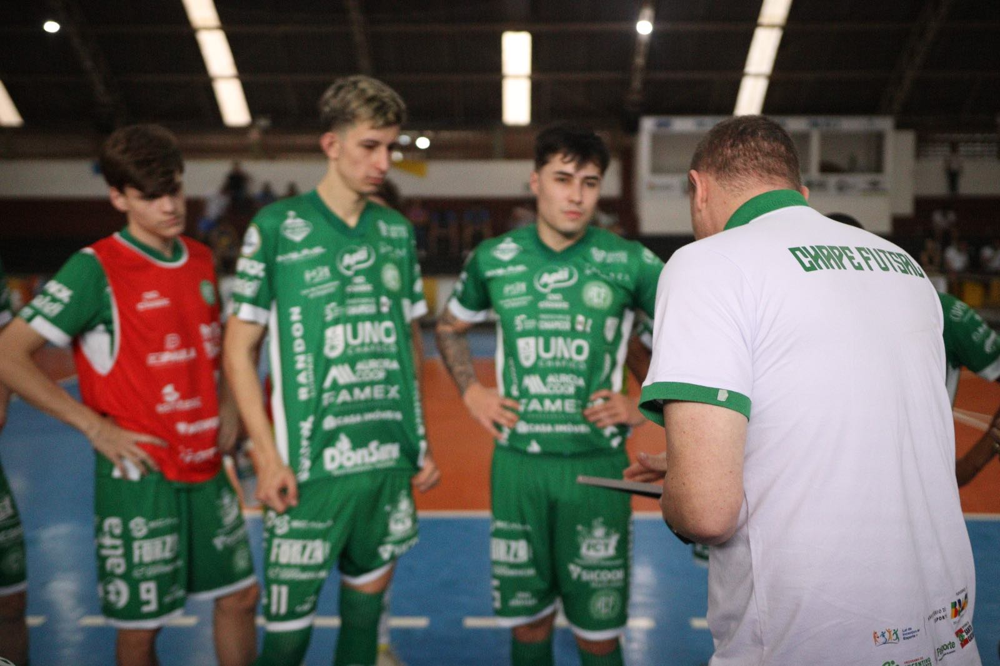
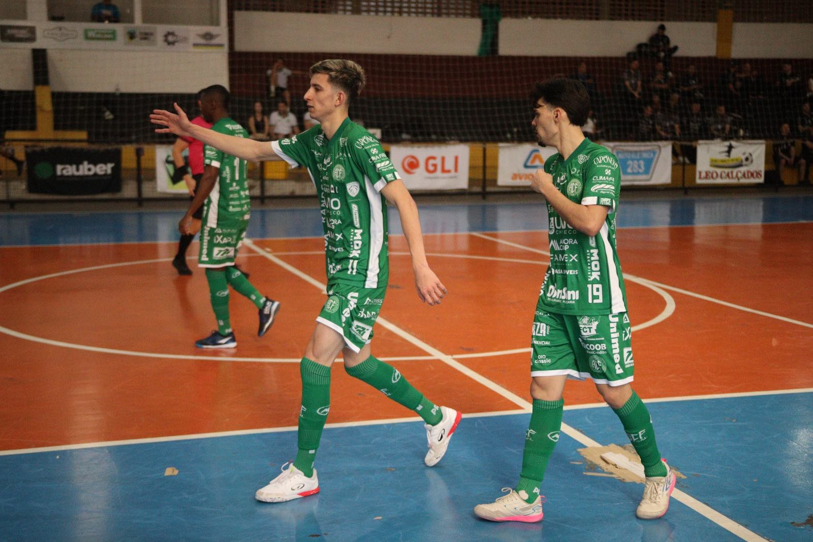
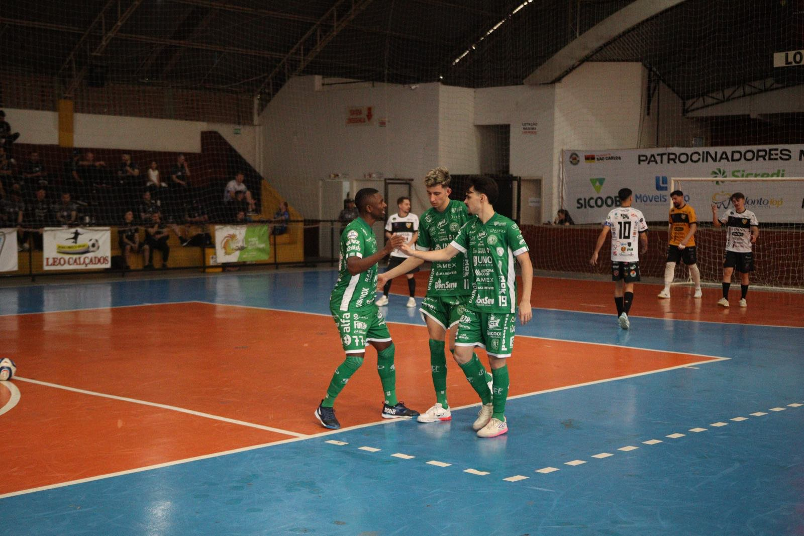
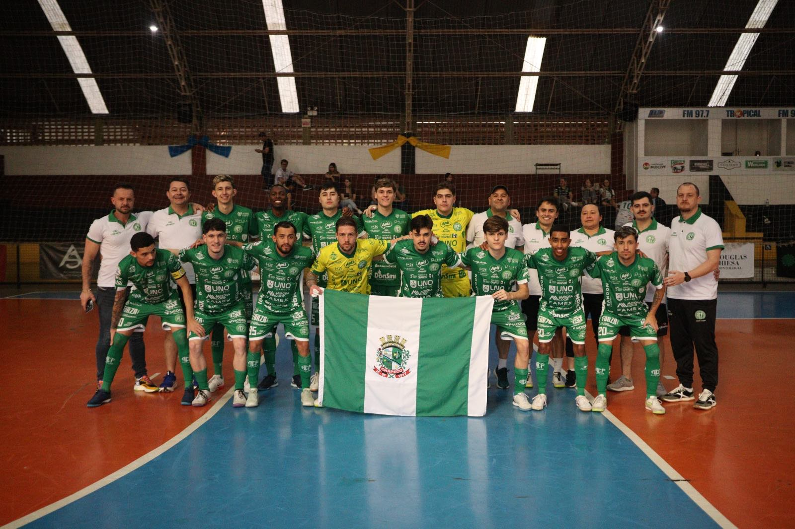

Os últimos dias foram de muitos compromissos para as equipes da Associação Chapecoense de Futsal. O Verdão das Quadras disputou a fase microrregional dos Jogos Abertos de Santa Catarina (JASC) e os Jogos Universitários Catarinenses (JUCs), com campanhas de destaque.

Pelo micro dos JASC, o time adulto, comandado pelo técnico Leo Schroeder, classificou-se à semifinal e, consequentemente, à etapa regional. A vaga foi conquistada com vitória por 7 a 2 sobre Novo Horizonte neste domingo (19), no Ginásio Municipal de São Carlos, pelas quartas de final. Antes, na sexta (17) e no sábado (18), havia derrotado Quilombo (17 a 3) e Santiago do Sul (8 a 0), pela primeira fase. Na semana anterior, vencera Nova Erechim por 10 a 0, pela estreia. A sequência do torneio ainda não tem programação definida.

Em Itajaí, parte do grupo sub-20 defendeu a Unochapecó nos JUC’s, no ginásio da Univali, em Itajaí, e se sagrou vice-campeã. A equipe foi dirigida pelo supervisor e jurídico do clube, Raul Ramos, e chegou à final realizada neste domingo, quando acabou superada pela Esucri, de Criciúma, por 3 a 2. Para chegar à decisão, a Chape Futsal derrotou Uniplac (8 a 2), Udesc (5 a 0) e Unidavi (10 a 2), pela etapa de grupos, e Unoesc (3 a 0), na semifinal.


Brasileiro
A Chapecoense vive mais uma semana importante. Nesta sexta-feira (24), o elenco principal tem pela frente o São João do Jaguaribe (CE), às 19h15. O duelo vale pela segunda rodada do Campeonato Brasileiro e será no ginásio do SESC, em Chapecó. O Verdão das Quadras estreou com vitória em casa sobre o Criciúma, pelo placar de 3 a 0.

Fotos do microrregional dos JASC. Créditos: @rogersilva_fotografia/@achapefutsal